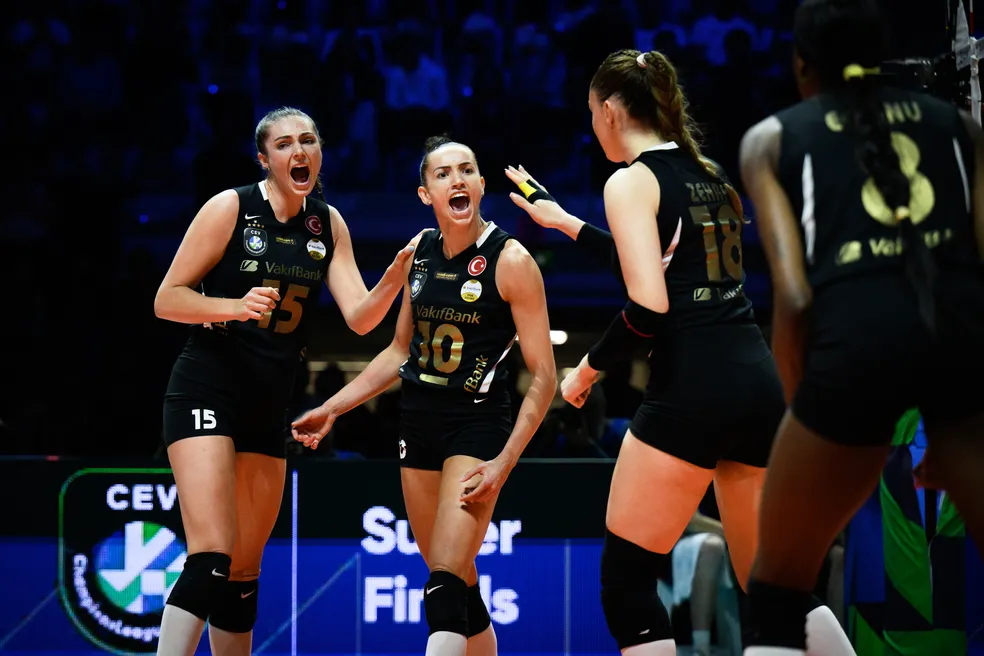

Champions League
Gabi e Egonu lideram, e Vakifbank é bicampeão da Champions League
Oposta italiana marca 42 pontos, brasileira brilha, e time desbanca Boskovic para chegar ao título.
Oposta italiana marca 42 pontos, brasileira brilha, e time desbanca Boskovic para chegar ao título.
Entidade está anunciando os selecionados em partes, através de suas redes sociais.
Ana Cristina, Gabi e Macris estão entre as convocadas para o torneio.
Central, que atua pelo Suzano, foi relacionado pelo técnico Renan Dal Zotto para a primeira semana de jogos do torneio de vôlei, no Canadá.
Entidades assinam documento que dá fim a processo. CBV pagará multa, e jogador tem suspensão renovada por 90 dias. COB, por outro lado, não reconhece final da Superliga.